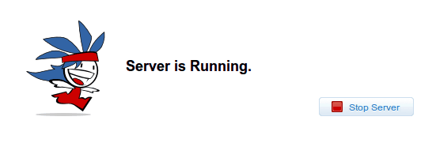

This is the administration interface that allows for hassle-free, simple and easy configuration of the Cherokee web server. It is the only administration mechanism that should be to such task and is in fact the only recommended option.
If you want to access the administration interface from the same computer that you installed cherokee on, simply start the administration interface by running:
cherokee-admin
You will obtain an output similar to the following one, which provides the information needed to be able to access the configuration interface. This information is generated randomly each time the program is launche, and it can be very useful in case you need to to give temporary access to a remote administrator in the confidence that no future accesses will be possible.
Login: User: admin One-time Password: F4c7cyogxhTGbp1r Cherokee Web Server 1.0.0b5077 (May 12 2010): Listening on port ALL:80, TLS disabled, IPv6 enabled, using epoll, 1024 fds system limit, max. 505 connections, caching I/O, 10 threads, 50 connections per thread, standard scheduling policy
Then redirect your web browser to 127.0.0.1:9090, which is the default address and port for the administration interface. The User and One-time Password will be required initially. This is to prevent other users of the local host from being able to configure the server unless they have access to the password.

If you want to access the administration interface from another computer, the easiest solution is to bind the cherokee administration interface to all network interfaces:
cherokee-admin -b
|
Warning
|
By starting cherokee-admin listening on all interfaces, everyone that can access the computer and has the password can alter your cherokee configuration. Don’t use this in a production environment! It is much better to use ssh -L in these cases. |
Instead of binding it to every interface, we encourage you to use an SSH tunnel. This is the recommended way. In order to do so you must issue the following command:
ssh -L 9090:localhost:9090 remote_IP
After that you can access the remote interface through http://localhost:9090 and every request will be forwarded to the remote IP running cherokee-admin.
Of course these options can be combined to your heart’s contempt.
Example:
Make cherokee use a different configuration file, listen on port 9091 and grab the administration interface application from a different path:
cherokee-admin -b -p 9091 -C /etc/cherokee/cherokee2.conf \
-d /path/to/svn/trunk/cherokee-admin/
This is the full information provided by the manpage.
Refer to the configuration section for more in-depth explanations of the usage of the interface as a configuration tool.